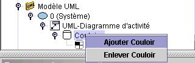

Diagramme
d'activités

Le diagramme
d'activité
décrit les activités de traitement d'un objet.
Les concepts suivants
peuvent être
utilisés
pour construire un diagramme d'activité avec Open ModelSphere:
- Acteur humain

- État d'action

- Objet

- Transition

- Couloir

- Pseudo
État d'action:
- Initial

- Final

- Décision

- Synchronisation

Ajouter
un acteur
- Sélectionnez l'acteur
dans la barre d'outils édition
.
- Avec l'outils acteur,
cliquez à l'intérieur de a fenêtre du diagramme.
Ajouter
un État d'action
- Sélectionnez l'outil état d'action
dans
la barre d'outils édition
.
- Avec l'outils état d'action,
cliquez à l'intérieur de a fenêtre du diagramme.
Notez que les états d'action et pseudo états d'action
ont les mêmes caractéristiques et peuvent
être créés de la même façon.
.
Ajouter un Objet (acteur non-humain)
- Selectionnez l'outil création d'objet
dans la barre d'outils édition.
- Avec l'outil création
d'objet sélectionné
à l'intérieur de a fenêtre du
diagramme.
Ajouter une Transition
- Selectionnez l'outil création de transition
( or
 )
dans la barre d'outils
édition.
)
dans la barre d'outils
édition.
- Choississez une des transitions
à partir de la barre
d'outils édition.
- Avec l'outil
création de transitions sélectionné,
cliquez
près du milieu du État d'action
source, puis, au milieu du État d'action cible.
Ajouter un couloir
- À partir de l'explorateur, sélectionner le
groupe Couloir
 sous Diagramme
de Séquence UML.
sous Diagramme
de Séquence UML.
- Cliquez droit sur le groupe Couloir et cliquez ajouter
Rôle.

Ajouter un
stéréotype UML à un objet
- Selectionnez un objet à partir de la fenêtre
du diagramme ou
de la fenêtre explorateur.
- À partir du panneau
de conception, choisir Stéréotype
dans la liste.
Assigner
une contrainte UML à un objet
- À partir de la fenêtre du diagramme ou de la
fenêtre explorateur cliquez-droit
sur l'object cliquez sur l'outil propriétés

- Sélectionnez l'onglet contrainte UML, cliquez le bouton Lien.
Selectionnez une contrainte
UML à
partir de la fenêtre.
Les concepts communs
tel que
les liens sémantiques
et
les notes graphiques peuvent aussi
être
utilisés pour enrichir vos diagrammes d'activités.